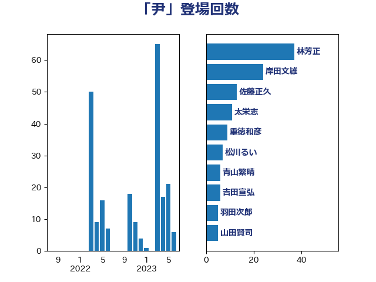

単語「尹」

| 林芳正 | 自由民主党 | 37 回 |
| 岸田文雄 | 自由民主党 | 24 回 |
| 佐藤正久 | 自由民主党 | 13 回 |
| 太栄志 | 立憲民主党 | 11 回 |
| 重徳和彦 | 立憲民主党 | 9 回 |
| 松川るい | 自由民主党 | 7 回 |
| 青山繁晴 | 自由民主党 | 6 回 |
| 吉田宣弘 | 公明党 | 6 回 |
| 羽田次郎 | 立憲民主党 | 5 回 |
| 山田賢司 | 自由民主党 | 5 回 |
| 竹内真二 | 公明党 | 4 回 |
| 福山哲郎 | 立憲民主党 | 4 回 |
| 浜田聡 | NHK党 | 4 回 |
| 島尻安伊子 | 自由民主党 | 4 回 |
| 菊田真紀子 | 立憲民主党 | 3 回 |
| 笠井亮 | 日本共産党 | 3 回 |
| 矢倉克夫 | 公明党 | 3 回 |
| 玄葉光一郎 | 立憲民主党 | 3 回 |
| 松原仁 | 立憲民主党 | 3 回 |
| 徳永久志 | 無所属 | 3 回 |
| 和田義明 | 自由民主党 | 3 回 |
| 三上えり | 立憲民主党 | 3 回 |
| 金子道仁 | 日本維新の会 | 2 回 |
| 笠浩史 | 無所属 | 2 回 |
| 田名部匡代 | 立憲民主党 | 2 回 |
| 清水真人 | 自由民主党 | 2 回 |
| 榛葉賀津也 | 国民民主党 | 2 回 |
| 平木大作 | 公明党 | 2 回 |
| 小熊慎司 | 立憲民主党 | 2 回 |
| 高橋光男 | 公明党 | 1 回 |
| 音喜多駿 | 日本維新の会 | 1 回 |
| 鈴木宗男 | 日本維新の会 | 1 回 |
| 金城泰邦 | 公明党 | 1 回 |
| 西村康稔 | 自由民主党 | 1 回 |
| 若松謙維 | 公明党 | 1 回 |
| 稲津久 | 公明党 | 1 回 |
| 神谷宗幣 | 参政党 | 1 回 |
| 石井啓一 | 公明党 | 1 回 |
| 片山大介 | 日本維新の会 | 1 回 |
| 浜田靖一 | 自由民主党 | 1 回 |
| 浜地雅一 | 公明党 | 1 回 |
| 河西宏一 | 公明党 | 1 回 |
| 梅村みずほ | 日本維新の会 | 1 回 |
| 早坂敦 | 日本維新の会 | 1 回 |
| 新妻秀規 | 公明党 | 1 回 |
| 徳永エリ | 立憲民主党 | 1 回 |
| 平林晃 | 公明党 | 1 回 |
| 山本博司 | 公明党 | 1 回 |
| 山口那津男 | 公明党 | 1 回 |
| 上田清司 | 国民民主党 | 1 回 |
| 上田勇 | 公明党 | 1 回 |